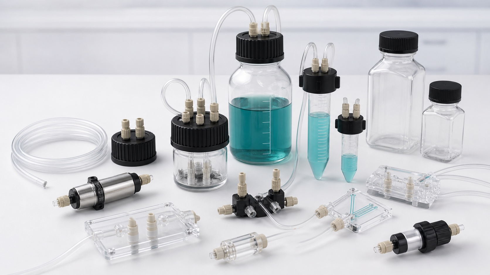

Interface standard
Confirm luer, barb, 1/4-28, 10-32, compression, press-fit, or application-specific geometry.

Connections and manifolds
Browse luer, barbed, compression, PEEK, manifold, and reservoir interfaces for research microfluidic tubing and chip connections.

Selection answer
Select a microfluidic connector by matching tube OD, thread or port standard, wetted material, pressure rating, and required dead volume. A connector that physically fits can still be unsuitable if its ferrule, bore, solvent resistance, or sealing method does not match the complete fluid path.
Technical content reviewed by Snehan Peshin, Ph.D. · Updated July 25, 2026. Confirm final selection against current manufacturer documentation and the complete research system.
Before requesting a quote
MicroCD Labs reviews compatibility, documentation, final pricing, availability, and lead time before payment.
Confirm luer, barb, 1/4-28, 10-32, compression, press-fit, or application-specific geometry.
Review PEEK, ETFE, PTFE, polypropylene, elastomer, or metal exposure against the fluid.
Minimize unswept volume and choose an interface that can be assembled consistently.
Research-use catalog
Open an item for variants, specification questions, documentation links, and quote status.
Connectors and manifolds
Male, female, threaded, and adapter luer connectors for syringe, tubing, and chip workflows.
Connectors and manifolds
Straight, elbow, tee, and reducer barbed fittings for soft tubing and low-pressure lab assemblies.
Connectors and manifolds
Compression fittings, nuts, ferrules, and unions for secure connections in small-bore tubing runs.
Connectors and manifolds
Distribution manifolds for routing multiple inputs, outputs, washing lines, and reagent feeds.

Reservoirs
High-pressure microfluidic reservoir option for pressure-driven flow setups and controlled reagent delivery.
Fluidic accessories
Flow resistance kit for tuning pressure-driven flow behavior in microfluidic setups.
Reservoirs
GL45 bottle-cap reservoir interface for 100 mL bottles with 2/4 port configuration options.
Reservoirs
Reservoir adapter for 15 mL Falcon-style tubes with 2/4 port configuration options.
Reservoirs
Small-volume reservoir adapter for 1.5 mL Eppendorf-style tubes and low-volume assays.
Fluidic accessories
Pulse-damping accessory for smoothing flow variation in pump-driven fluidic setups.
Reservoirs
Very small reservoir interface for PDMS chip workflows and low-volume microfluidic testing.
Connectors and manifolds
Four-port cross manifold for routing multiple 1/4-28 fluidic connections.
Technical review
Share the fluid, target flow or pressure, interface sizes, and intended research workflow. We can help build a compatible shortlist.